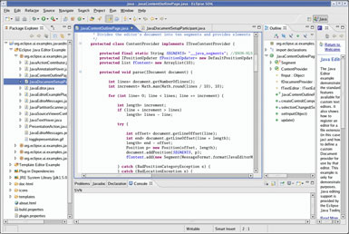

James Madison University, Fall 2017 Semester
Lab17: Getting started with Eclipse

Background
Throughout the semester, you have been using classes that come with the Java Platform, Standard Edition or "Java SE" for short. Did you know that the source code for Java SE is freely available? Have you ever wondered what "real world" Java code looks like? This lab has two main objectives: (1) introduce you to the Eclipse IDE, and (2) show you what Java library source code looks like. Eclipse is a heavyweight IDE that makes it easier to navigate large software projects.
Part 1 - Hello World
Eclipse provides two levels of organization:- A workspace is a collection of projects and settings. Typically students create a separate workspace for each course they take.
- A project is a collection of files that make up a single application. Typically each lab or assignment will be its own project.
-
If you have not done so already, open Eclipse. At the "Select a workspace" prompt, specify a location for your workspace (e.g.,
/cs/home/stu/username/CS149). -
From the "Welcome" screen, click on the tutorials icon (graduation cap and tassel). Select the "Create a Hello World application" tutorial.
-
Follow the instructions carefully, except for one detail. When creating projects for CS 149/159, we recommend that you do NOT create separate folders for source and class files.
NOTE: Putting source and class files in the project folder enables you to switch back and forth between Eclipse, the command-line, and other editors without making any changes.
-
Go ahead and close the "Task List" view on the right, since we won't be using it. Explore the menus, toolbars, and other areas of the program. Ask questions regarding features you are curious about.
-
Be sure to see how the automatic syntax checking works by introducing some bugs in your HelloWorld program. Then mess up the indenting, and press Ctrl+Shift+F to "Format" your code.
-
Explore the autocomplete feature by typing partial lines of code. For example, type the code
System.and see the list of options that pop up. Then typeSystem.out.and press Ctrl+Space to see a list of possible method calls. Use the arrow keys to select different methods, and see how the Javadoc displays in a yellow tooltip.
At this point, you should have a working Hello World program. Do not proceed until you have completed the tutorial and Steps 4-6 above.
Part 2 - Java Library Source
Technically speaking, code like System.out.println() is not part of the Java language, but rather part of the Java library. You can learn a lot about programming by exploring the Java library source code.
-
If you download the source code for the Java library, it comes in a single file named
src.zip. From a CS Linux lab machine, typenemo /usr/lib/jvm/openjdk-8to locate that zip file. Open it and find the source code forjava.lang.String(under the java/lang/ folder). -
Eclipse automatically knows about this file if it's installed on your computer. In your HelloWorld.java program, add the line
String str = "Hello";and put your cursor on the word String. Then press the F3 button (which is a shortcut for "Open Declaration"). -
Notice the "Outline" view on the right. Click on the
substringmethods and take a look at how they are implemented. Then close the "String.class" window, move the cursor toprintln, and press F3 again. Now see how that method is implemented. -
You can also hover your mouse over pretty much anything. In the
println(Object x)method, hover your mouse over the codevalueOfand read the tooltip. Then put your cursor there, press F3, and see the source code forvalueOf.
Part 3 - CodingBat String-1
When learning to use methods from String and other library classes, you may find the autocomplete feature of Eclipse to be very helpful. But make sure it doesn't interfere with your learning how to write the code yourself!
-
Create a new Eclipse project named Lab17. Don't forget to use the project folder as root for sources and class files (see Step 3 above). You may want to configure that option to be the default.
-
Create a new class named StringThing, but do NOT check the box to create a main method. Write a documentation comment including your name and today's date.
-
Write the code that defines the following methods from CodingBat String-1: extraEnd, firstTwo, firstHalf, and withoutEnd. Add stubs so that your code compiles.
-
At this point you may want to set up your Eclipse preferences to match the CS 149 style guidelines. Go to Window -> Preferences and select the General -> Editors -> Text Editors item:
-
Change the settings to match the screenshot above: insert spaces for tabs, and show print margin at 80 columns. You may also want to show whitespace characters. Then click the Apply and Ok buttons.
-
Make sure there is a blank line between each method. Press Ctrl+Shift+F to clean up the code. Quickly write the documentation comments for each method. (You may copy-paste the method descriptions directly from CodingBat.)
-
Note that Eclipse will auto-generate a documentation template if you select a method and press Shift-Alt-J. You can accomplish the same thing by typing
/**then pressing enter above an existing method. -
At the bottom of the class (on the line just before the last }), press Ctrl+Space. Arrow down to the main option, and press Enter. Write a simple program that calls your four methods with a test string of your choice –
"HelloThere"is a good example from CodingBat. -
At this point, you should have a working StringThing program. Make sure it compiles and runs without any errors. You will turn in this file later on.
-
Finish implemeting your four String-1 methods. Then in the main method, write a loop that calls each of your methods for each of the provided command-line arguments. You should be able to test your program from the command line like this:
java StringThing This is a test!
Submit your StringThing.java to Canvas by the end of the day. Part of your grade will be based on your CodingBat.com scores, so make sure that you have "submitted" each problem to CodingBat as well (and that it works).